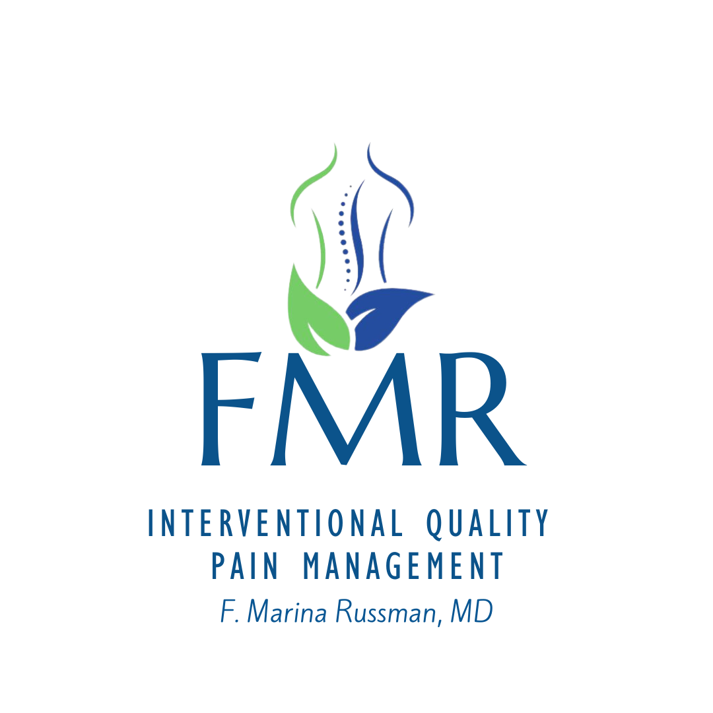

Measured Outcomes
Select a Questionnaire
1. Örebro Musculoskeletal Pain Questionnaire
2. QuickDASH Questionnaire
3. Neck Disability Index (NDI)
4. Mood Disorder Questionnaire (MDQ)
5. Oswestry Low Back Questionnaire
6. Lower Extremity Functional Scale (LEFS)
7. Upper Extremity Functional Index (UEFI)
8. Hamilton Anxiety Rating Scale (HAM-A)
9. Hamilton Depression Rating Scale (HDRS)
10. Patient Health Quesionnaire (PHQ-9)
11. General Anxiety Disorer-7 (GAD-7)
12. Ask Suicide-Screening Questions (ASQ)